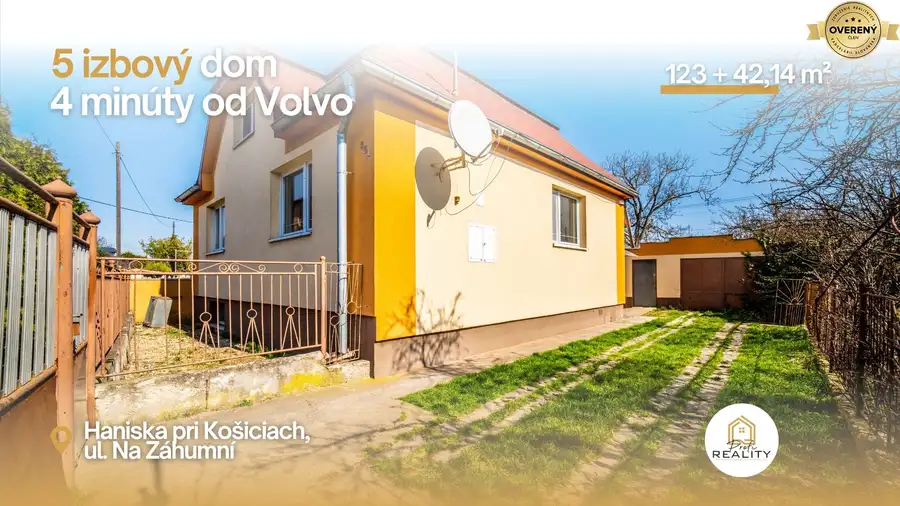
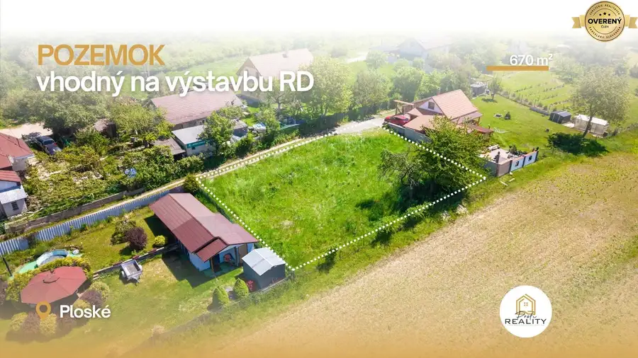

Hľadáme dom, kde začne nový život jednej rodiny - do 20 minút od Košíc
Okolie, Nováčany
- Plocha120 m²
- Poschodie0.
O nehnuteľnosti
Hľadáme
rodinný dom
pre konkrétneho klienta, ktorý si chce vytvoriť skutočný domov pre svoju rodinu.
Dom by mal spĺňať nasledovné požiadavky:
Lokalita –
do 20 minút od Košíc
, ideálne smer
Lorinčík, Šemša, Nováčany, Haniska a okolie.
Dôležitá je občianska vybavenosť – škola, škôlka, potraviny a dobré susedské vzťahy.
Stav –
obývateľný, čiastočne zrekonštruovaný, s funkčným kúrením.
Možnosť kúrenia drevom je vítaná, zateplenie výhodou.
Dispozícia –
3 až 4 samostatné izby
, kuchyňa môže byť spojená s obývačkou.
Pozemok – minimálna rozloha
700 m² (
mimo zastavanej plochy), zastavaná plocha viac ako 120 m², pri dvojpodlažnom dome minimálne 60 m².
Cena –
do 220 000€
, financovanie zabezpečené kombináciou hypotekárneho úveru a vlastných zdrojov.
Ak predávate nehnuteľnosť, ktorá zodpovedá týmto parametrom, možno máme pre vás práve toho správneho kupujúceho.
TIPÉRSKA ODMENA:
Vyplatíme 5 % z našej provízie po úspešnom zrealizovaní obchodu.
TE-5RDEx
Kontakt:
Eliška Tichá,M.A.
Tel:
Email:
PROFI REALITY SABOL - meníme sny na reality
Parametre
| Rozloha pozemku | 700 m² |
|---|---|
| Zastavaná plocha | 120 m² |
| Poschodie | prízemie |
| Voda | studňa a vodovod |
| El. napätie | 230V |
| Plyn | áno |
| Terasa | áno |
| Pivnica | áno |
| Garáž | áno |
| Parkovanie | áno |
| Inžinierske siete | áno |
| Dátum zverejnenia | 24. 5. 2026 |
Kde to je
Mohlo by Vás zaujímať

Rodinné domy10 149 990 €Nová cena - Haniska | 4 min od Volvo | dom s budúcnosťou, ktorú cítite Okolie, Haniska 5-izbový123 m² Niektoré nehnuteľnosti sú len domy. Iné sú príležitosťou. Tento samostatne stojaci rodinný dom v obci Haniska spája pokoj vidieka s investičným…
Pozemok7 54 900 €NOVÁ CENA - PREDAJ | Stavebný pozemok 670 m² – Ploské, Ortáše Okolie, Ploské 670 m² Možno ste ho práve našli. Ponúkame na predaj stavebný pozemok s výmerou 670 m² v obci Ploské, časť Ortáše , len 15 minút od centra Košíc . Lokalita… Rodinné domy 260 000 €Hľadáme 4–5-izbový rodinný dom v Okolí košíc – pre konkrétneho klienta Okolie, Čaňa 4-5 Zastupuji preverenú klientku na základe platnej sprostredkovateľskej zmluvy – má vybavené financovanie a je pripravená kúpiť jej vysnívaný domček.…